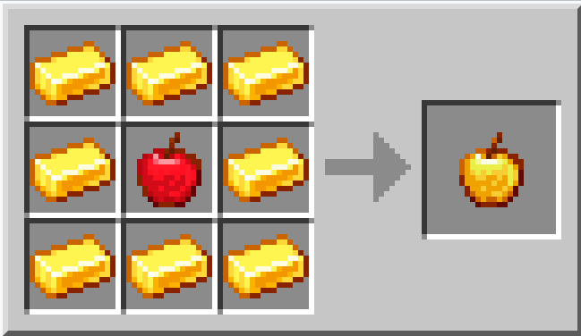

Mela D'Oro

| Nome | Mela D'Oro |
|---|---|
| Id | 322 142 |
| Tipo | Cibo |
| Raritá | raro |
| rinnovabile | si |
| impilabile | si(64) |
| ristora | 4 |
| Effetto 1 | assorbimento (2:00) |
| Effetto 2 | Rigenerazione II (0:05) |
La mela d'oro è un oggetto cibo speciale che da degli effetti benefici quando consumato.
Fabbricazione
8 lingotti d'oro disposti attorno ad una mela
Vantaggi
Le mele d'oro ristabiliscono l'intera salute.
Svantaggi
Le mele d'oro sono molto rare.
Nonostante una torta guarisca solo nove cuori in totale, è molto più efficiente nel senso di tempo e di risorse, rendendola una scelta comune rispetto alle mele d'oro per efficienza della guarigione.